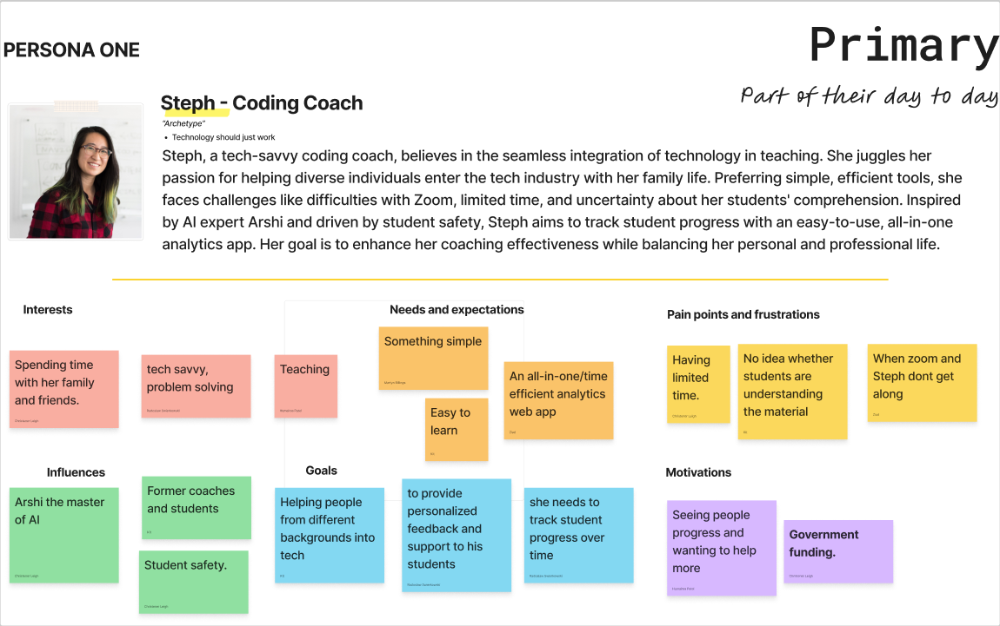
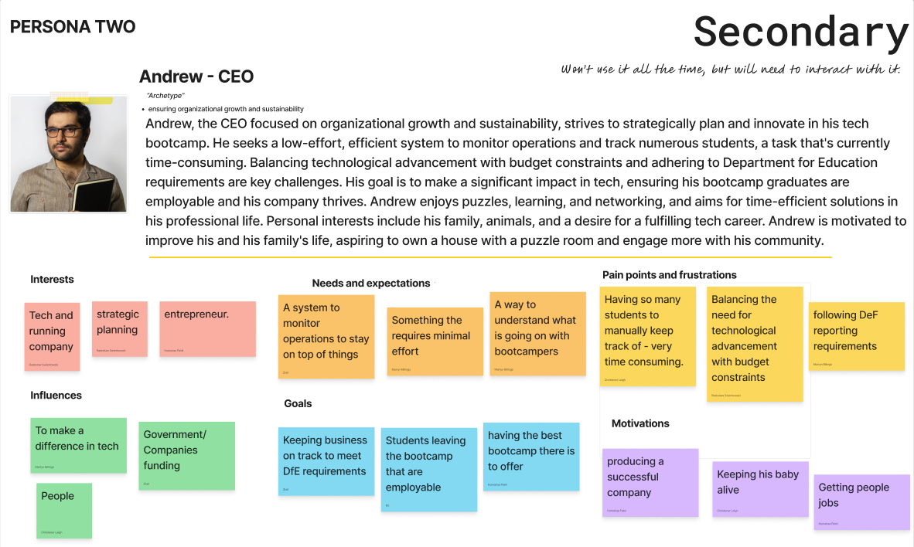
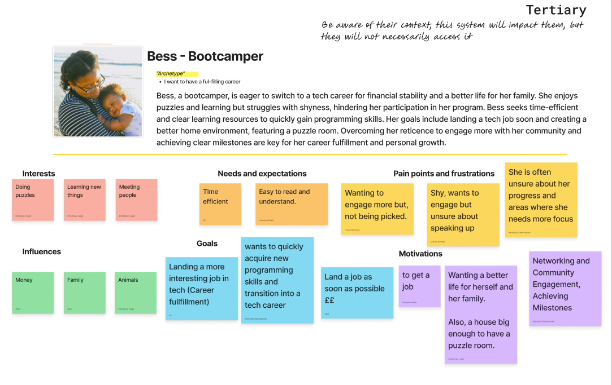
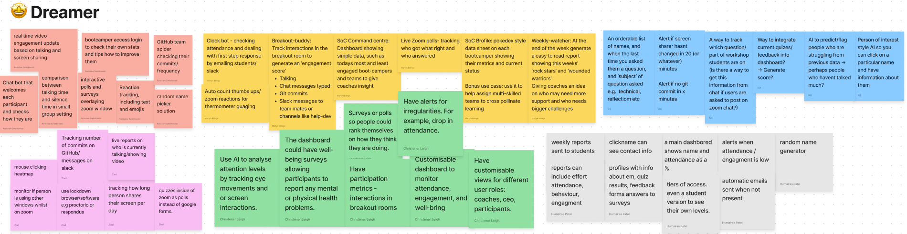
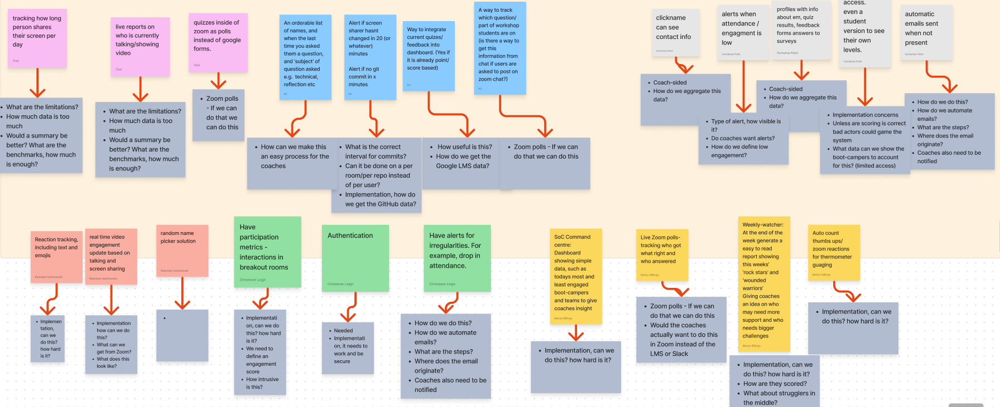

Intern
Tech Stack
Next.js
Tailwind
TypeScript
Node.js
PostgreSQL
Jest
Playwright
Figma
Git
Overview
I was one of six developers who worked on this project. We collaborated with a stakeholder to create a website for the School of Code that assists coaches in managing attendance tracking. We had a four-week deadline to complete this project. The result of our efforts is 'Intern,' a website designed to handle all the manual labor, thereby simplifying tasks for the coaches.
Week One:
Briefing day began with us creating our team manifesto, in which we discussed and agreed upon our communication methods, such as Zoom and Slack, as well as our decision-making processes, including dot voting and wheel spinning. We also outlined our conflict resolution strategies. We then received our problem statement: 'The School of Code requires an innovative and efficient solution for tracking and analyzing participant engagement and attendance in live Zoom classes. The existing manual process is laborious and fails to utilize the rich data available through Zoom's API.' After receiving the brief, we knew we needed to understand the problem before we could start considering solutions. We began by addressing the 5 W's: Who, What, When, Where, and Why. Then, we worked on understanding the users of the product, such as the CEO and coaches to tailor our approach to their needs. Following this, we created a list of questions we had about the problem, and then we met with the stakeholder to get answers to our questions. With answers in mind we had an in-depth look at how the problem is already being solved.
The next day, we started by conducting competitor research to explore how the problem could be solved, ranging from using pen and paper to having things automatically tracked. We then moved on to developing personas to empathize with and understand how the problem impacts them. We decided to create three personas. The primary users are the coaches, who would use the product to track bootcampers' attendance, understanding, and learning. The secondary user is the CEO; we wanted to ensure the product would help his business perform efficiently. We also developed a persona for the bootcamp participants. Even though they won't be using the dashboard directly, we wanted to ensure it benefits them and overall enhances their learning experience.



Disney Ideation time: This was when we freely jotted down numerous ideas as if there were no limits. We then discussed these ideas in the realist stage to evaluate their feasibility. Finally, we moved on to the critic stage, where we compiled a list of potential questions and problems that might arise during implementation. By the end, we had come up with a list of features that we thought would be useful in a simple, integrated dashboard.


Next: MVP & MVE, then User Stories, low-fi, hi-fi.